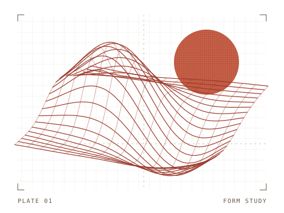

01ABOUT ME
你好，我是 Yuetong。这里是我的项目集，记录我在数据分析、建模和对话系统上的实践。

02SELECTED WORK
整合行情和链上数据，构建因子特征，并实现 FF6 与 IPCA 基线模型。
用 Seq2Seq 和 Luong 注意力机制训练对话模型，并用 Flask 做成可交互的网页。
在 Jupyter Notebook 中清洗数据，用可视化和假设检验探索不同顾客群体的消费差异。